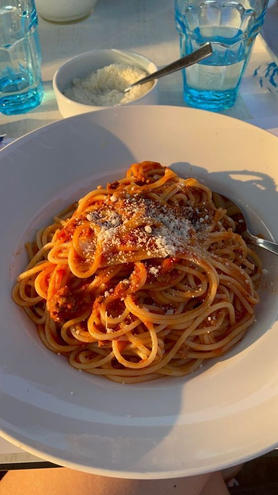

White Sauce Pasta

Preparation Time: 25 mins
Difficulty: Easy
White Sauce Pasta is a creamy and delicious dish made with soft pasta coated in a rich and cheesy white sauce. It is perfect for a quick and satisfying meal.
Ingredients
- Pasta
- Milk
- Butter
- Flour
- Cheese
Steps
- Boil water in a large pot and add salt.
- Add pasta to the boiling water and cook until soft (al dente).
- Drain the pasta and keep it aside.
- In a pan, melt butter and add a little flour to make a base.
- Slowly add milk while stirring continuously to avoid lumps.
- Cook until the sauce thickens.
- Add cheese, salt, and pepper to the sauce.
- Add boiled pasta into the sauce and mix well.
- Cook for 2–3 minutes and serve hot.